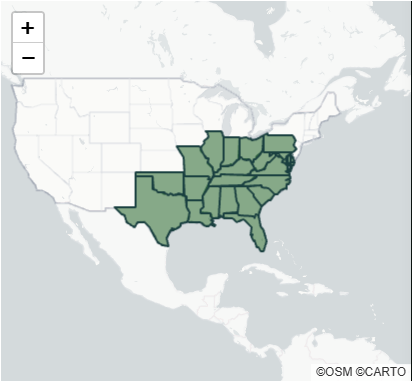
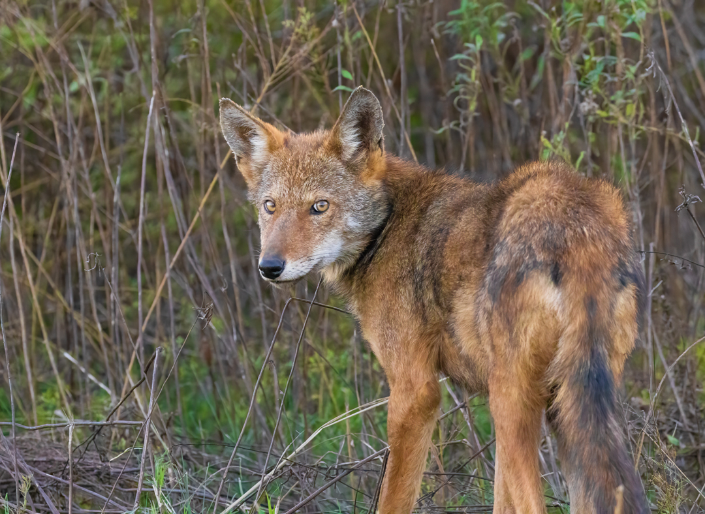
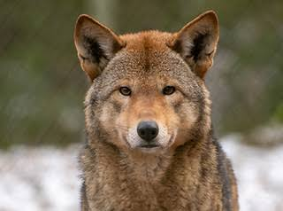

Common Name: Red Wolf (Canis rufus) Status: Critically Endangered
Scientific Classification
| Kingdom: | Animalia |
|---|---|
| Phylum: | Chordata |
| Subphylum: | Vertebrata |
| Class: | Mammalia |
| Order: | Carnivora |
| Family: | Canidae |
| Genus: | Canis |
| Species: | C. rufus |
Size Range/Identification
The red wolf can grow to be about 4 ft as an adult.1 They’re similar to their relatives, Canis lupus, however they have a smaller size, narrower proportions, longer legs, shorter fur, and longer ears. Their fur color is made up of colors such as tawny, grey, black, and their signature red/cinnamon color that’s located close to the top of their heads in between their ears.3
Habitat/Geology
Before they were classified as endangered, they lived in mountains, lowland forests, and wetlands. They could’ve been found in places across the US like Texas and Louisiana.3
- Texas
- Louisiana
- Mississippi
- Alabama
- Florida
- Georgia
- South Carolina
- North Carolina
- Tennessee
- Kentucky
- Maryland
- Virignia
- Illinois

Ecology/Behavior
Red wolves are carnivores who usually eat smaller animals such as birds, rodents, raccoons, etc. They hunt in particular areas for 7 to 10 days before switching to somewhere else. They’re also nocturnal species and like other canines, they have packs and home ranges. In captivity they could live for up to 14 years and in the wild, 4 years. When it comes to breeding, the season goes from January to March and it’s usually the dominant male and female being able to solely reproduce within the pack. They communicate with one another in many different ways such as body language, pheromones, and vocalizations to communicate social and reproduction status, as well as mood.3 They don’t really have any predators, as while they are primarily killed by other canids, it’s usually for competition between the groups.3


References
- Wikipedia: Red Wolf
Wikipedia Contributors. (2019, November 21). Red wolf. Wikipedia; Wikimedia Foundation. https://en.wikipedia.org/wiki/Red_wolf
- Red Wolf Animal Facts - Canis rufus
A-Z-Animals.com. (2019). Red Wolf. A-Z-Animals.Com. https://a-z-animals.com/animals/red-wolf/
- Animal Diversity Web: Red
Wolf
Mulheisen, M., & Csomos, R. A. (2014). Canis rufus (red wolf). Animal Diversity Web. https://animaldiversity.org/accounts/Canis_rufus/
- A Week to
Remember for the Red Wolf - Rewilding
Trefney, E., & Trefney, E. (2025, September 18). A Week to Remember for the Red Wolf. Rewilding. https://rewilding.org/a-week-to-remember-for-the-red-wolf/
- A Milestone in Red Wolf Country - Rewilding
Trefney, E., & Trefney, E. (2024, December 23). A Milestone in Red Wolf Country. Rewilding. https://rewilding.org/a-milestone-in-red-wolf-country/